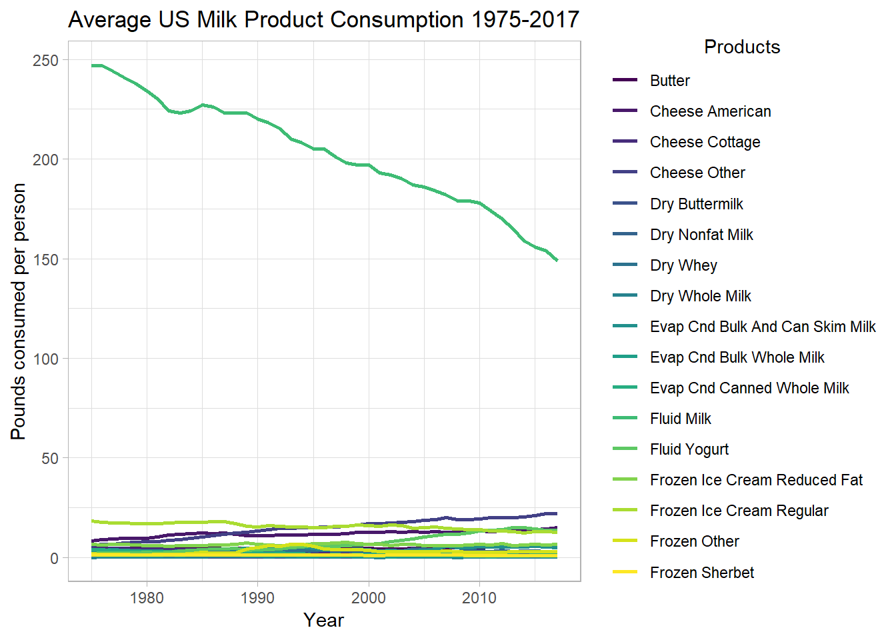

Data for Tidy Tuesday this week comes from the United States Department of Agriculture. The data and code books can be found here. There are five different data sets provided, and I will only look at the milk products facts data set which tracks Americans annual consumption of various milk products.
library(tidyverse)
library(cowplot)
library(viridis)
theme_set(theme_light())
MilkProductFacts <-
read_csv("https://raw.githubusercontent.com/rfordatascience/tidytuesday/master/data/2019/2019-01-29/milk_products_facts.csv")MilkProductFactsTidy <- MilkProductFacts %>%
gather(product, lbsPerPerson, -year) %>%
mutate(product = str_to_title(str_replace_all(product, "_", " ")))
MilkProductFactsTidy %>%
ggplot(aes(year, lbsPerPerson, color = product)) +
geom_line(size = 1) +
scale_colour_viridis_d() +
labs(x = "Year",
y = "Pounds consumed per person",
title = "Average US Milk Product Consumption 1975-2017",
color = "Products") +
theme(legend.title.align = .5)
There are so many different products in this graph that it is difficult to get a clear picture of what is going on, with the exception of the decline in fluid milk consumption. Fortunately if we look the names of the products they have a natural grouping category of butter, cheese, dry, evaporated, fluid, and frozen. We can use these categories to hopefully get a clearer picture of what is happening.
MilkProductFactsCat <- MilkProductFacts %>%
gather(product, lbsPerPerson, -year) %>%
separate(product, c("category", "product"), sep = "_", extra = "merge", fill = "right") %>%
mutate(product = ifelse(is.na(product), category, product)) %>%
group_by(category, year) %>%
summarize(lbsPerPersonCat = sum(lbsPerPerson)) %>%
ungroup()
MilkProductFactsCat %>%
ggplot(aes(year, lbsPerPersonCat, color = category)) +
geom_line(size = 1) +
scale_colour_viridis_d() +
labs(x = "Year",
y = "Pounds consumed per person",
title = "Average US Milk Product Consumption by Category 1975-2017",
color = "Category")This is much better, but again it is still difficult to see what is really going on in the plot since it is being dominated by the fluid category. Two potential solutions can be either show two plots one which includes fluid and one that excludes it, or plot each category on its own plot.
PlotWithFluid <- MilkProductFactsCat %>%
ggplot(aes(year, lbsPerPersonCat, color = category)) +
geom_line(size = 1) +
scale_colour_viridis_d() +
labs(x = "Year",
y = "Pounds consumed per person",
title = paste(strwrap("Average US Milk Product Consumption by Category 1975-2017"
, width = 36),
collapse = "\n"),
subtitle = "Including Fluid Products",
color = "Category")
# PlotWithoutFluid <- MilkProductFacts %>%
# gather(product, lbsPerPerson, -year) %>%
# separate(product, c("category", "product"), sep = "_", extra = "merge", fill = "right") %>%
# mutate(product = ifelse(is.na(product), category, product)) %>%
# filter(category != "fluid") %>%
# group_by(category, year) %>%
# summarize(lbsPerPersonCat = sum(lbsPerPerson)) %>%
PlotWithoutFluid <- MilkProductFactsCat %>%
filter(category != "fluid") %>%
ggplot(aes(year, lbsPerPersonCat, color = category)) +
geom_line(size = 1) +
scale_colour_viridis_d() +
labs(x = "Year",
y = "Pounds consumed per person",
title = paste(strwrap("Average US Milk Product Consumption by Category 1975-2017"
, width = 36),
collapse = "\n"),
subtitle = "Excluding Fluid Products",
color = "Category")
plot_grid(
PlotWithFluid +
theme(legend.position="none",
plot.title = element_text(size=12)),
get_legend(PlotWithFluid),
PlotWithoutFluid +
theme(legend.position="none",
plot.title = element_text(size=12)),
get_legend(PlotWithoutFluid),
rel_widths = c(1.5, .5, 1.5, .5),
ncol = 4)Alternatively we could look at each group individually.
MilkProductFactsCat %>%
ggplot(aes(year, lbsPerPersonCat, color = category)) +
geom_line(size = 1) +
scale_colour_viridis_d() +
facet_wrap(~category, scales = "free") +
labs(x = "Year",
y = "Pounds consumed per person",
title = "Average US Milk Product Consumption by Category 1975-2017",
color = "Category")This gives us a much better idea of what is going on within each category individually and the magnitude of the change in that category which is great, but it is difficult to see how a change of x amount in one category compares to another since they are on different scales. In order to do a comparison like this we need to get them on similar scales. I will use for each year the percent change from 1975 in order to achieve this.
MilkProductFactsCat %>%
group_by(category) %>%
mutate(refYear = ifelse(year == 1975, lbsPerPersonCat, NA)) %>%
fill(refYear) %>%
mutate(pctChange = (lbsPerPersonCat - refYear) / refYear * 100) %>%
ggplot(aes(year, pctChange, color = category)) +
geom_line(size = 1) +
scale_colour_viridis_d() +
labs(x = "Year",
y = "Percent Change",
title = "Percent Change in US Milk Consumption by Product Category Since 1975-2017",
color = "Category")In this plot we get a better idea of of how much the changes in each category compare relative to the others. As we can see the change in cheese consumption from 1975 to 2017 has increased by over 100%! The change in fluid milk consumption that seemed so large in previous graphs was only about a 35% decrease between 1975 and 2017. Another relationship that is easier to see here is that the dry and evaporated categories seem to be inversely related. Since this graph seems to be quite useful, we should look at a similar graph at the product level.
MilkProductFactsTidy <- MilkProductFactsTidy %>%
group_by(product) %>%
mutate(refYear = ifelse(year == 1975, lbsPerPerson, NA)) %>%
fill(refYear) %>%
mutate(pctChange = (lbsPerPerson - refYear) / refYear * 100) %>%
ungroup()
MilkProductFactsTidy %>%
ggplot(aes(year, pctChange, color = product)) +
geom_line(size = 1) +
scale_colour_viridis_d() +
labs(x = "Year",
y = "Percent Change",
title = "Percent Change in US Milk Consumption by Product Since 1975-2017",
color = "Category")This graph looks like it could be much more interesting than the very first one we looked at, but there is still so much going on it is difficult to see what is going on. Lets see if we can tease this out a little more by grouping the products into three groups, those with a decrease, relatively moderate increase, or large increases in consumption.
MilkProductFactsTidy <- MilkProductFactsTidy %>%
group_by(product) %>%
mutate(changeCat = case_when(year == 2017 & pctChange < 0 ~ "Decrease",
year == 2017 & between(pctChange, 0, 100) ~ "Moderate Increase",
year == 2017 & pctChange > 100 ~ "Increase")) %>%
fill(changeCat, .direction = "up")
decreasePlot <- MilkProductFactsTidy %>%
filter(changeCat == "Decrease") %>%
ggplot(aes(year, pctChange, color = product)) +
geom_line(size = 1) +
scale_colour_viridis_d() +
facet_wrap(~changeCat, scales = "free") +
labs(x = "Year",
y = "Percent Change",
title = "Percent Change in US Milk Consumption by Product Since 1975-2017",
color = "Category")
mIncreasePlot <- MilkProductFactsTidy %>%
filter(changeCat == "Moderate Increase") %>%
ggplot(aes(year, pctChange, color = product)) +
geom_line(size = 1) +
scale_colour_viridis_d() +
facet_wrap(~changeCat, scales = "free") +
labs(x = "Year",
y = "Percent Change",
title = "Percent Change in US Milk Consumption by Product Since 1975-2017",
color = "Category")
increasePlot <- MilkProductFactsTidy %>%
filter(changeCat == "Increase") %>%
ggplot(aes(year, pctChange, color = product)) +
geom_line(size = 1) +
scale_colour_viridis_d() +
facet_wrap(~changeCat, scales = "free") +
labs(x = "Year",
y = "Percent Change",
title = "Percent Change in US Milk Consumption by Product Since 1975-2017",
color = "Category")
plot_grid(decreasePlot +
theme(legend.position="none"),
get_legend(decreasePlot),
mIncreasePlot +
theme(legend.position="none"),
get_legend(mIncreasePlot),
increasePlot +
theme(legend.position="none"),
get_legend(increasePlot),
ncol = 2,
align = "v", axis = "l")